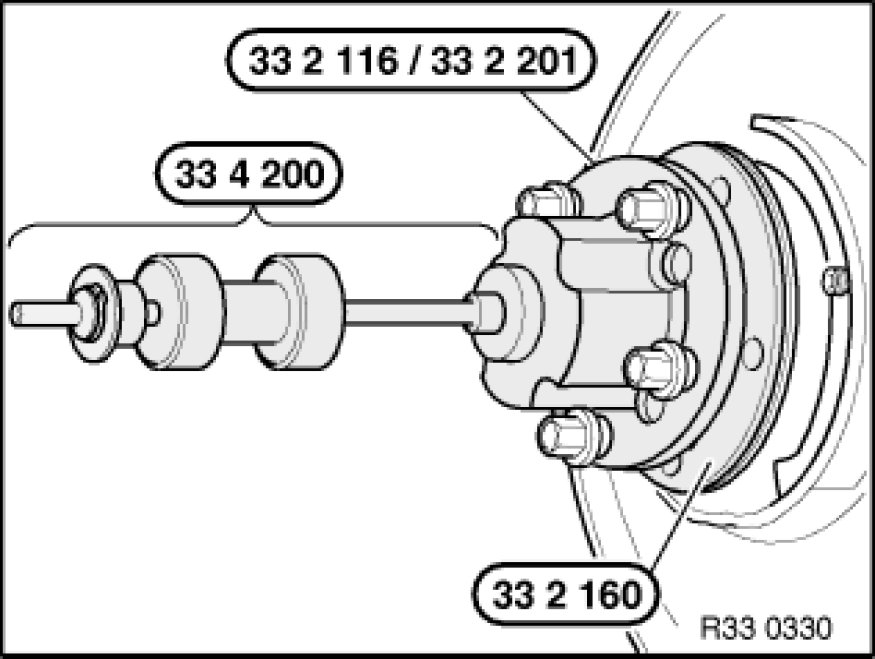
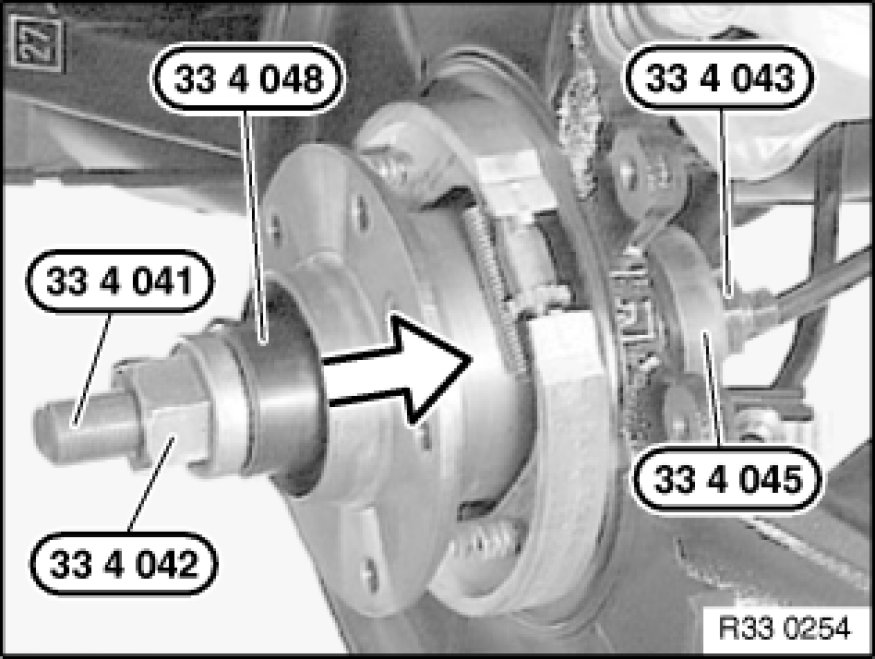

Replacing Left Drive Flange on Rear Axle Shaft
33 41 005 - Replacing left drive flange on rear axle shaft

Special tools required:
- 33 2 116 33 2 110 Removal and Installation Tool
- 33 2 160 33 2 160 Spacer Ring
- 33 2 201 33 2 200 Fixture
- 33 4 041 33 4 040 Set of Tools
- 33 4 042 33 4 040 Set of Tools
- 33 4 043 33 4 040 Set of Tools
- 33 4 045 33 4 040 Set of Tools
- 33 4 048 33 4 040 Set of Tools
- 33 4 200 33 4 200 Tool Kit / Striker Fixture

Necessary preliminary tasks:
- Remove output shaft
- Remove brake disc Removing and Installing/Replacing Both Brake Discs (Rear)
- Remove pulse generator Replacing a Rear Pulse Generator
Important!
- Check sensor head and line from pulse generator prior to installation for external damage, replacing if necessary.

Force drive flange with special tools 33 2 116 33 2 110 Removal and Installation Tool / 33 2 201 33 2 200 Fixture, 33 2 160 33 2 160 Spacer Ring, 33 4 200 33 4 200 Tool Kit / Striker Fixture and 5 wheel bolts out of wheel bearing.
Note:
Rounded inside edge of special tool 33 2 160 33 2 160 Spacer Ring must point to drive flange.

Important!
The wheel bearing is destroyed when the drive flange is removed and cannot be reused!
Replace wheel bearing.

Installation:
Draw in drive flange with special tools 33 4 041 33 4 040 Set of Tools, 33 4 042 33 4 040 Set of Tools, 33 4 043 33 4 040 Set of Tools, 33 4 045 33 4 040 Set of Tools and 33 4 048 33 4 040 Set of Tools.
After installation:
- Adjust handbrake Adjustments